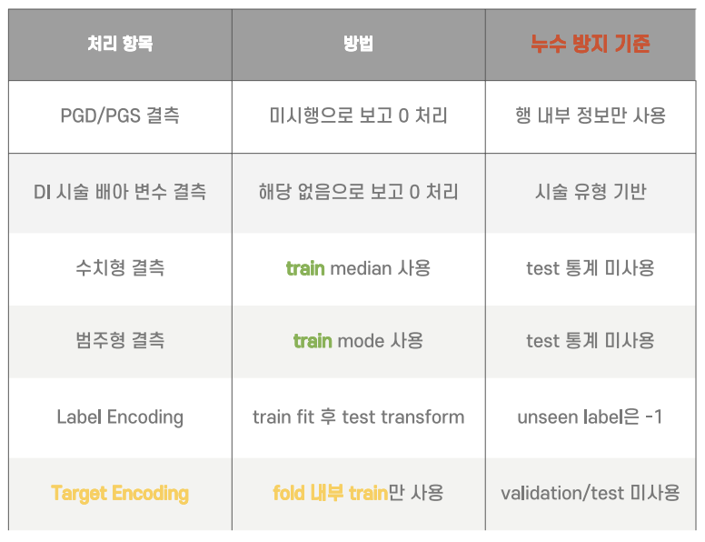

Project 01 · WorkMate AX · RAG Workflow
문서 근거 기반 답변에서 승인 처리까지 이어지는 업무 흐름
실제 기업 내부 문서 대신 보안 이슈가 없는 샘플 사내 문서를 사용해 문서 업로드, RAG 답변, 초안 생성, 승인/반려, 이력 저장으로 이어지는 end-to-end 흐름을 검증했습니다.
- 총 10개 이상의 REST API로 문서 관리, 질의응답, 승인, 이력 조회 기능 제공
- 출처 문장과 신뢰도 점수를 함께 제공해 AI 답변의 검토 가능성 강화
- 승인/반려 및 감사 로그를 통해 기업형 AI 서비스에 필요한 추적성 반영


Project 02 · Architecture & Planning
서비스 기획을 API와 DB 구조로 구체화
기능 요구사항을 인증, 건강 기록, 예측, 피드백, 조언, 챌린지, 리포트 도메인으로 나누고 프론트엔드, FastAPI 백엔드, AI Worker, MySQL, Redis가 연결되는 실행 구조를 설계했습니다.
- 요구사항 정의서와 API 명세서를 작성해 사용자 흐름을 엔드포인트 단위로 정리
- 모델 버전, 학습 데이터, 예측 결과, 예측 피드백 테이블을 분리해 추적성과 확장성 고려
- GitHub Issues와 PR 기반으로 기능 단위 작업을 나누고, 팀원 구현 범위와 리뷰 흐름을 관리
- Docker Compose 기반 실행 환경에서 Nginx, FastAPI, AI Worker, MySQL, Redis 흐름 구성


Project 02 · AI Pipeline
KNHANES 기반 만성질환 예측 모델 파이프라인
KNHANES 원천 데이터를 정제하고 표준 변수명 매핑, 결측치 처리, 파생변수 생성, 질환별 누수 피처 제거를 수행한 뒤 XGBoost, LightGBM, HistGradientBoosting 모델을 학습했습니다. 예측 요청은 API 서버에서 즉시 실행하지 않고 PredictionTask로 저장하며, 별도 AI Worker가 대기 작업을 처리하도록 설계했습니다.
- eGFR, UACR, WHtR, TG/HDL ratio, 가족력 점수 등 파생변수 생성
- 정답에 직접 연결될 수 있는 질환별 라벨 누수 피처 제거 로직 구성 및 모델 artifact 저장
- 저장된 feature 순서, median, calibrator, threshold를 고정해 동일 입력 결과 편차 최소화
- Screening threshold를 기본으로 사용해 건강관리 서비스에서 위험 신호를 놓치지 않는 방향으로 설계


Project 02 · Full-stack Service Flow
예측 결과부터 건강관리 행동까지 연결한 서비스 흐름
사용자가 건강 설문과 건강 기록을 입력하면 백엔드가 입력 스냅샷을 구성하고, AI Worker를 통해 예측한 결과를 대시보드, 피드백, 건강 조언, 챌린지, 리포트 흐름과 연결합니다.
- 회원가입, 이메일 인증, JWT 인증, 건강 설문 온보딩 흐름 구성
- 건강기록, 예측 요청, 예측 결과, 예측 피드백 API 흐름 구현
- 조언, 챌린지, 가상 펫, 리포트, 알림 기능을 건강관리 행동 유도 모듈로 분리
- AWS EC2, Docker Compose, Nginx, HTTPS 기반 배포 후 핵심 API P95 3초 이내와 실패율 0% 확인


Project 03 · Fertility Prediction · Feature Engineering
도메인 기반 전처리와 파생변수 설계
결측치를 단순 누락으로 처리하지 않고, 시술 미시행이나 해당 없음이라는 도메인 의미를 반영했습니다.
전처리와 인코딩 과정에서는 test 데이터 정보가 섞이지 않도록 누수 방지를 우선했습니다.
- PGD/PGS, DI 시술 관련 결측치를 도메인 의미에 맞춰 처리
- 수치형/범주형 결측은 train 기준 median/mode로 대체하고, unseen label은 -1 처리
- 배아 활용률, 수정률, 난자-배아 전환율, 결측 flag 등 도메인 파생변수 생성


Project 03 · Fertility Prediction · Modeling
OOF 기반 앙상블과 성과 분석
LightGBM과 CatBoost의 서로 다른 예측 패턴을 OOF 기준으로 조합하고,
취약 세그먼트 보정을 통해 최종 예측 안정성을 높였습니다.
- 5-Fold Stratified CV와 multi-seed 학습으로 OOF 예측값 생성
- Compact LGBM, 72-feature LGBM, CatBoost depth7/depth8, feature-count LGBM 조합
- Local OOF AUC 0.74093, Public Leaderboard AUC 0.742116 달성


Project 04 · Calorie Prediction · Data
타깃 분포와 주요 변수 관계 분석
칼로리 소모량은 낮은 구간에 데이터가 몰려 있어, 원본 타깃을 그대로 학습하면 특정 구간에 예측이 치우칠 수 있었습니다.
타깃 변환과 주요 변수 관계 분석을 통해 모델이 학습해야 할 패턴을 먼저 정리했습니다.
- Calories_Burned 분포를 확인하고 log1p 변환으로 왜도를 완화
- 운동 시간과 심박수가 칼로리 소모량과 강한 관계를 보이는 핵심 변수임을 확인
- 체중 단독 변수는 설명력이 낮아 BMI 등 복합 지표로 재가공할 필요를 도출


Project 04 · Calorie Prediction · Feature Engineering
생리학적 근거를 반영한 파생변수 설계
단순 측정값보다 운동 강도와 신체 조건을 함께 설명하는 변수를 설계하는 데 집중했습니다.
특히 심박수, 운동 시간, 체온, 체격 정보를 결합해 칼로리 소모량과 가까운 신호를 만들었습니다.
- BMI, Max_HR, HR_Zone으로 개인별 신체 조건과 운동 강도를 반영
- Cardio_Load, Total_Load로 심박수와 운동 시간을 결합한 운동부하 변수 생성
- Temp_Load, log_Duration, log_Total_Load 등 비선형 패턴을 보완하는 변수 추가


Project 04 · Calorie Prediction · Modeling
CatBoost 기반 앙상블과 신뢰성 검증
범주형 변수 처리와 회귀 성능을 고려해 CatBoost를 최종 모델로 선택하고,
5-Fold CV와 Multi-Seed Ensemble을 통해 예측 안정성을 높였습니다.
- Linear Regression, Random Forest, XGBoost, LightGBM, CatBoost를 비교해 최종 모델 선정
- Seed 수를 늘릴수록 OOF RMSE가 낮아지는 흐름을 확인하고 다중 앙상블 적용
- Actual vs Predicted와 residual 분포로 예측값의 선형성, 편향, 안정성 점검


Project 05 · 팀 프로젝트
흡연 여부에 따른 건강지표 차이 분석
GitHub건강검진 7,000건을 바탕으로 흡연자와 비흡연자의 건강 지표 차이를 탐색하고, 팀장으로서 분석 가설 설정과 통계 검정 흐름을 정리했습니다.
- (팀장) BMI와 연령대를 파생변수로 만들고 흡연 여부별 분포를 확인
- 혈액, 대사, 구강 건강 지표를 중심으로 분석 가설 설정
- T-test와 카이제곱 검정으로 집단 간 차이와 비율 차이를 점검

Project 05 · Smoking Health Analysis · Hypothesis Test
가설을 세우고 검정한 분석 흐름
단순히 그래프를 나열하기보다, 흡연과 관련이 있을 법한 지표를 가설로 세운 뒤 집단 간 차이와 비율 차이를 확인했습니다.
- 고령층 흡연자 집단에서 헤모글로빈 수치 분포 차이를 확인
- 연령대별 흡연 여부에 따라 충치 발생 비율이 달라지는지 비교
- 중성지방 분포가 흡연자 집단에서 상대적으로 높게 이동하는 패턴을 관찰
- 다만 관찰 데이터이므로 흡연이 직접 원인이라고 단정하지 않고, 관련성 중심으로 해석